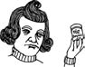

\1\2ğaç\3
İlk Umpa-Lumpalar ne renkti?

a. Siyah
b. Altın sarısı
c. Çok renkli
d. Turuncu
Roald Dahl’ın klasik çocuk romanı Çarli’nin Çikolata Fabrikası’nın 1964’teki ilk baskısında yorulmak nedir bilmeyen, sadık Umpa-Lumpalar turuncu değil siyahtır.
Dahl onları, kovulan beyaz işçilerin yerine geçmeleri için “daha önce hiçbir beyaz adamın giremediği Afrika ormanlarının en derin ve en karanlık bölgelerinden” Bay Wonka tarafından getirilmiş 3000 yıllık zenci bir cüce kabilesi olarak tanımlamıştır. Daha önce sadece “böcek, okaliptüs yaprağı, tırtıl ve bong bong ağacı kabuğu” yemiş olmalarına rağmen burada sadece çikolatayla yaşıyorlardı.
Zamanında hoş karşılanmış olsa da Dahl’ın Umpa-Lumpa tanımlaması kölelik iması nedeniyle 1970’lerin başında tehlikeli bir şekilde ırkçılığa dönüştü, bu nedenle Amerikalı yayımcı Knopf bazı değişiklikler konusunda ısrarcı oldu. 1972’de Çarli’nin Çikolata Fabrikası kitabının düzeltilmiş hali çıktı. Zenci cüceler çıkmış, yerlerine küçük hippilere benzeyen “parlak kestane saçlı” ve “kızıl-beyaz tenli” Umpa-Lumpalar gelmişti.
Daha sonra, Dahl’ın kitabına çizimler yapan Quentin Blake, bu yaratıkları çok renkli Mohawk saçları olan futuristik punkçılar olarak betimledi. 1971 ve 2005’teki iki Hollywood filmi Umpa-Lumpaları turuncu elfler haline getirdi.
Dahl 1971 yapımı filmden, (adı geçmeyen) senarist David Seltzer’in (Daha sonra Omen’i yazmıştır) Wonka’ya kitapta olmayan şiirsel alıntılar okutmasından dolayı nefret etmiştir.
Söylenenlere göre, “Charlie” ismi ABD’de Afro-Amerikalıları kasteden bir sokak ağzı haline geldiği için, filmin adı Willy Wonka’nın Çikolata Fabrikası olarak değiştirilmiştir.